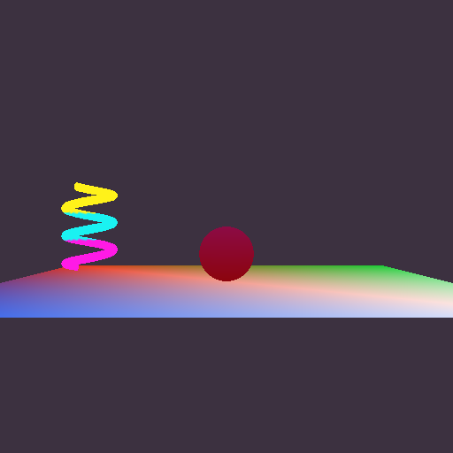
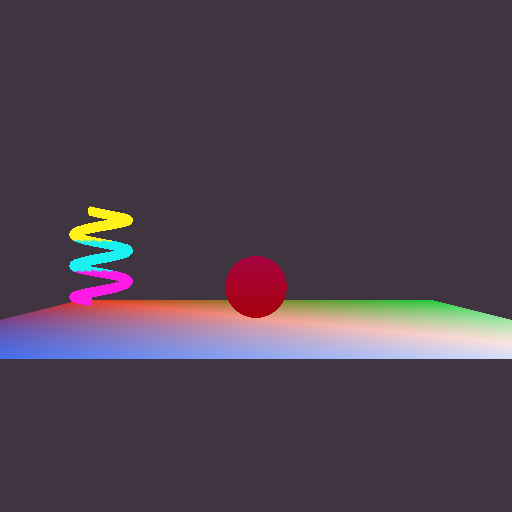
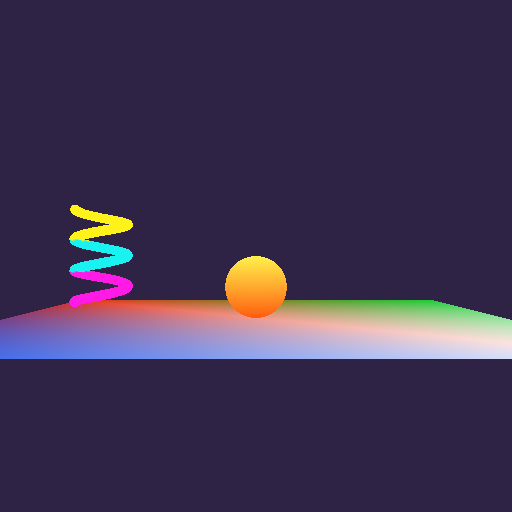
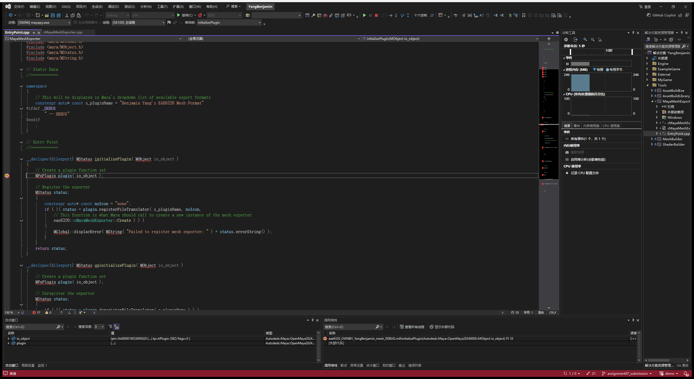
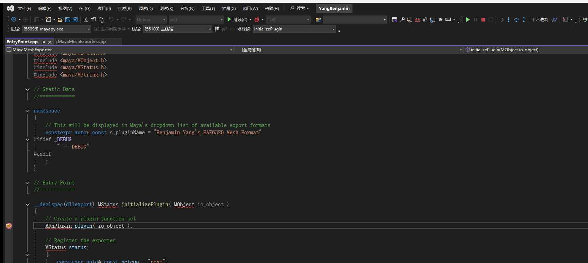
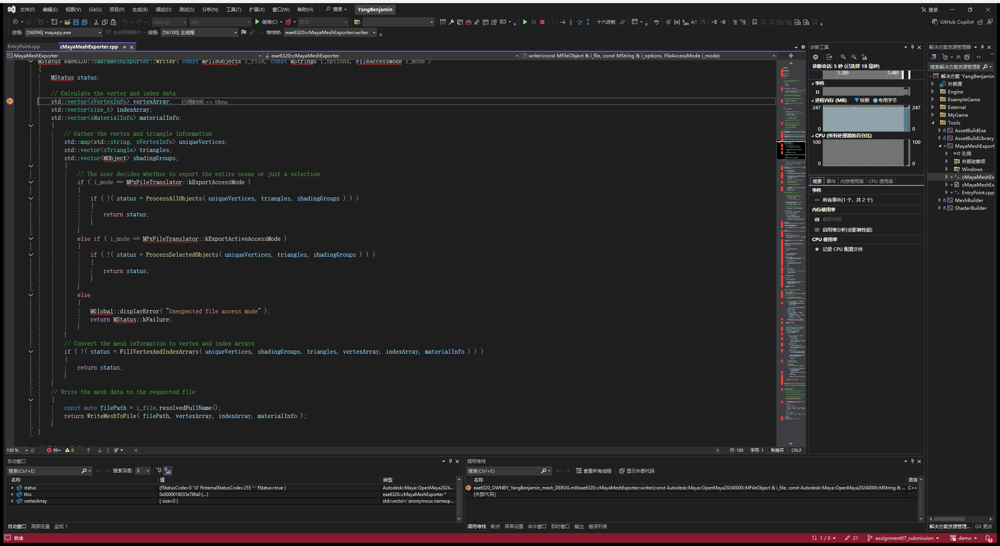
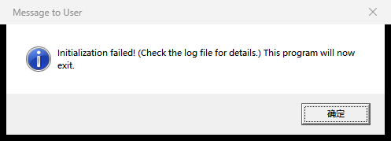

Assignment 07
A Maya plug-in that exports meshes in my human-readable format, three meshes made in Maya, depth buffering, and vertex colors
MyGame.exe. ESC closes the game. Arrow keys move the sphere, hold SPACE to give it the triangle mesh, hold SHIFT to draw it with the plain vertex-color effect. W/A/S/D move the camera and Q/E turn it.
Screenshots



The meshes from Maya
All three meshes are Maya polygon primitives with vertex colors, exported with my plug-in into MyGame_/Content/Meshes/ and listed in AssetsToBuild.lua next to the hand-written ones from Assignment 06. The Maya scenes are saved in MyGame_/Maya/ (floor.ma, sphere.ma, coil.ma) so they can be changed and re-exported later.
| Mesh | Maya | Exported |
|---|---|---|
| floor.mesh (floor, white effect) | Plane 8 x 8, 1 x 1 subdivisions | 4 vertices, 2 triangles |
| sphere.mesh (movable object) | Sphere radius 0.5, 24 x 16 | 1488 vertices, 720 triangles |
| coil.mesh (spinner) | Helix, 3 coils, height 1.5 | 8664 vertices, 4340 triangles |
The exported vertex counts are higher than Maya's because the exporter makes one engine vertex for every distinct combination of position, normal, tangent, texture coordinate and color. Where a UV seam or a hard edge meets a position, Maya stores one point but the GPU needs two vertices.
Instead of clicking through the menus three times I wrote the steps down as a script, MyGame_/Maya/create_and_export_meshes.py. It runs in Maya's Python (mayapy), creates each primitive, paints its vertex colors, saves the .ma file and exports it with cmds.file( ..., type="Benjamin Yang's EAE6320 Mesh Format", exportSelected=True ). That is exactly what File > Export Selection does in the Maya window, so the meshes can also be made by hand.
Depth buffering
The effects already took render state bits when they were created, so turning depth buffering on was two lines in the render state that both of the game's effects share:
uint8_t renderStateBits = 0;
Graphics::RenderStates::DisableAlphaTransparency( renderStateBits );
// Objects now live in a 3D world, so nearer ones should hide farther ones
Graphics::RenderStates::EnableDepthTesting( renderStateBits );
Graphics::RenderStates::EnableDepthWriting( renderStateBits );
// The spinner turns its back to the camera half of the time and should still be visible
Graphics::RenderStates::EnableDrawingBothTriangleSides( renderStateBits );The MayaMeshExporter project
The provided project is in Tools/MayaMeshExporter/ on disk and in the Tools folder in Solution Explorer, next to MeshBuilder and ShaderBuilder. It got a new project GUID, the v143 toolset, and my own target names, eae6320_OWNBY_YangBenjamin_mesh and eae6320_OWNBY_YangBenjamin_mesh_DEBUG. The paths come only from environment variables: the Maya headers and libraries from $(DEVKIT_LOCATION)\include\ and $(DEVKIT_LOCATION)\lib\, and a custom build step copies the .mll to $(MAYA_PLUG_IN_PATH), where Maya's Plug-in Manager finds both builds.
The plug-in only has an x64 platform. In the Configuration Manager every solution platform (x64 and x86) builds its x64 configuration. A plug-in is a DLL that Maya loads into its own process, and Maya is 64-bit only, so a 32-bit plug-in could never be loaded. Maya's libraries are also 64-bit only, so it could not even be linked. Building it while building the 32-bit OpenGL game is fine, because the plug-in has nothing to do with the game's platform.
What references did I have to add to MayaMeshExporter? None. The plug-in links only Maya's libraries (Foundation.lib and OpenMaya.lib, through #pragma comment in Windows/ExternalLibraries.win.h, found in $(DEVKIT_LOCATION)\lib\). The only engine file it uses is Engine/Windows/Includes.h, so that windows.h is included the same way as everywhere else. That file is header-only and the include path comes from the EngineDefaults property sheet, so no engine library has to be linked. The plug-in runs inside Maya, not inside the game, so it shouldn't link engine code it doesn't need.
What other projects depend on MayaMeshExporter? None. Neither the game nor BuildMyGameAssets needs it. The exporter is run by a person in Maya, and its output (the .mesh files) is committed under MyGame_/Content/Meshes/. From there the normal asset build copies those files with MeshBuilder, the same way it handles the hand-written meshes. If BuildMyGameAssets depended on the exporter, building the game would need the Maya devkit and the environment variables. To check this, I cloned the tag into an empty folder, unset the three Maya variables, and built only MyGame and BuildMyGameAssets in all four configurations. They built and produced all five meshes.
What the exporter writes
The plug-in writes the same Lua format that I designed by hand in Assignment 06 (vertices are an array of dictionaries, triangles are an array of { a, b, c } counted from 0 and listed counter-clockwise), with a few comments added. This is the start of the exported floor:
return
{
-- Exported from Maya by Benjamin Yang's EAE6320 mesh exporter
-- 4 vertices, 2 triangles
vertices =
{
{ -- 0
position = { x = -4, y = 0, z = 4 },
color = { r = 0.1, g = 0.3, b = 0.9, a = 1 },
normal = { x = 0, y = 1, z = 0 },
tangent = { x = 1, y = 0, z = 0 },
bitangent = { x = 0, y = 0, z = -1 },
texcoord = { u = 0, v = 0 },
},
-- ... vertices 1 to 3 look the same ...
},
triangles =
{
{ 0, 1, 2 }, -- 0
{ 2, 1, 3 }, -- 1
},
}Maya is right-handed with +y up, winds triangles counter-clockwise and puts the UV origin at the lower left. Those are the conventions my format uses, so nothing is converted. The Direct3D-specific index swap still happens only in cMesh.d3d.cpp.
Did I export the unused data? Yes. Every vertex also has its normal, tangent, bitangent and texture coordinate, even though the engine reads only position and color for now. I chose this because re-exporting is the expensive step: it means opening every Maya file and exporting every mesh again by hand. Lighting and texturing are on the way, and when they arrive the data will already be in the files. Only the loader has to change. The format makes this free to ignore: the loader looks values up by name, so it never sees the keys it doesn't ask for, and the Assignment 06 meshes without these keys still load. The cost is size (coil.mesh is 3.2 MB of text) and parse time. That's acceptable for the human-readable source format, and a binary built format can drop whatever the game doesn't use.
Debugging the plug-in



The debugger was attached to mayapy.exe, which is Maya running without its window (the same program that runs my export script). Once it was waiting, I set breakpoints in initializePlugin() and writer(), used Debug > Attach to Process with the code type set to Native, then loaded eae6320_OWNBY_YangBenjamin_mesh_DEBUG and exported a cube. One thing went wrong first: with the code type left on automatic, the breakpoints were never hit. Choosing Native code fixed it, which is what the assignment warns about.
Too many vertices
The limit is 65536 vertices per mesh, because the index buffer stores each index as a 16-bit uint16_t. A triangle can therefore only refer to vertices 0 to 65535. A larger mesh can't be drawn with 16-bit indices, and the engine is meant to keep that limit for now.
To test it I exported a sphere with 260 x 260 subdivisions (67342 Maya points, 269880 exported vertices) and copied it over sphere.mesh. Both sides handle it without crashing:
- In Maya, the exporter still writes the file but prints a warning in the Script Editor right away:
This mesh has 269880 vertices, but the EAE6320 engine can only load meshes with up to 65536 vertices. The artist learns about the problem at export time instead of from a broken game later. - In the game, the loader checks the length of the vertices table before allocating anything and fails with a specific message in eae6320.log:
The mesh file "data/Meshes/sphere.mesh" has 269880 vertices, but a mesh can have at most 65536. (Debug builds also assert.) cMesh::Load() returns the failure, initialization fails, the game shows the message box below, cleans up and exits with code 1.

While testing the limit I found a bug at the boundary. A mesh with exactly 65536 vertices passed the check, but Load() then passed static_cast<uint16_t>( vertices.size() ) to Initialize(), and 65536 wraps around to 0. Indices must fit in 16 bits but the count of vertices doesn't, so Initialize() now takes the vertex count as unsigned int. A 65536-vertex mesh is therefore created with all of its vertices.
Re-exporting the movable object
Vertex colors (optional challenge)
- The vertex format gained
uint8_t r, g, b, a(default 255). Direct3D's input layout has a second element, COLOR, asDXGI_FORMAT_R8G8B8A8_UNORM, and OpenGL has attribute location 1 with 4 normalizedGL_UNSIGNED_BYTEvalues. - The vertex shader passes the color through. The standard fragment shader outputs it, and the animated color shader multiplies its color by it.
- In the file a color is
color = { r, g, b, a }with values in [0, 1], the way a person thinks about color. The loader converts each value to [0, 255] by rounding (value * 255 + 0.5) instead of truncating, so 1.0 becomes 255 and 0.5 becomes 128. Alpha is optional and defaults to 1. The whole color is optional and defaults to white, so the Assignment 06 meshes load unchanged (the triangle is still white). - The plug-in already provided the colors Maya stores per vertex, so painting them with Mesh Display > Apply Color is all an artist has to do.
Notes
- All four configurations (Debug/Release, x64/x86) build with no errors and no warnings, and Direct3D and OpenGL render the same picture.
- I used Maya 2024, the version I could install. Its installation already contains the devkit's include and lib folders, so DEVKIT_LOCATION points at the Maya install folder, with the trailing slash. Nothing in the project is hard-coded.
- ExampleGame is unchanged and still runs.